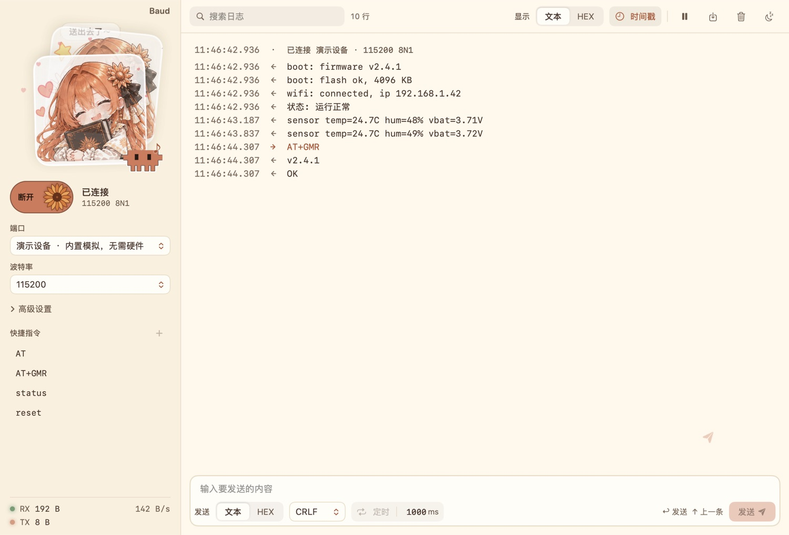
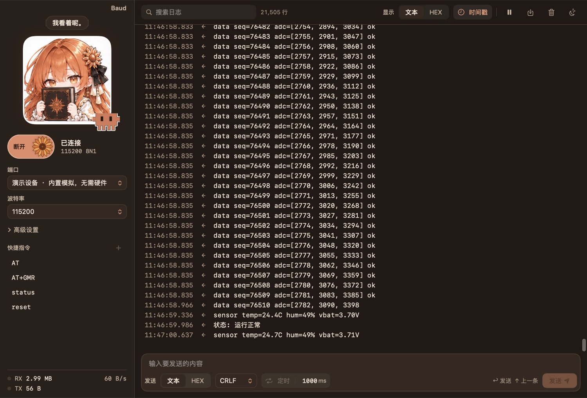
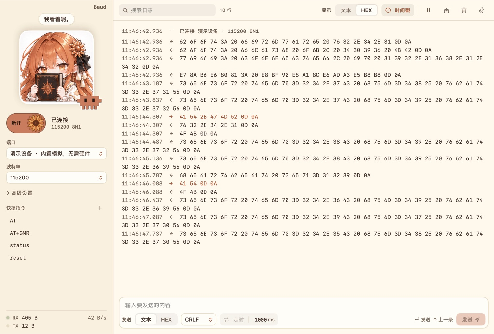
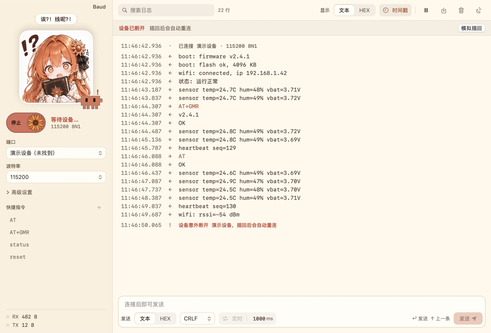

一个会陪你看日志的 Mac 串口助手
连接、收发、HEX、断线重连，该有的都有。旁边还住着一个跟着串口变表情的看板娘，和一只能戳的小方块 Clawd。
这条线是 “Baud” 四个字母按 8N1 发送时的真实波形：起始位拉低，数据位低位在前，停止位拉高。
片子里的看板娘和 Clawd 都能戳，连戳几下她会生气。
每个表情都对应 app 里一个真实的状态，台词也是 app 里的原话。点一下试试。
上面的短片是照着 app 搭的动画，这几张直接截自 Baud。日志内容都来自内置的演示设备。




可爱归可爱，它首先是个能干活的工具。